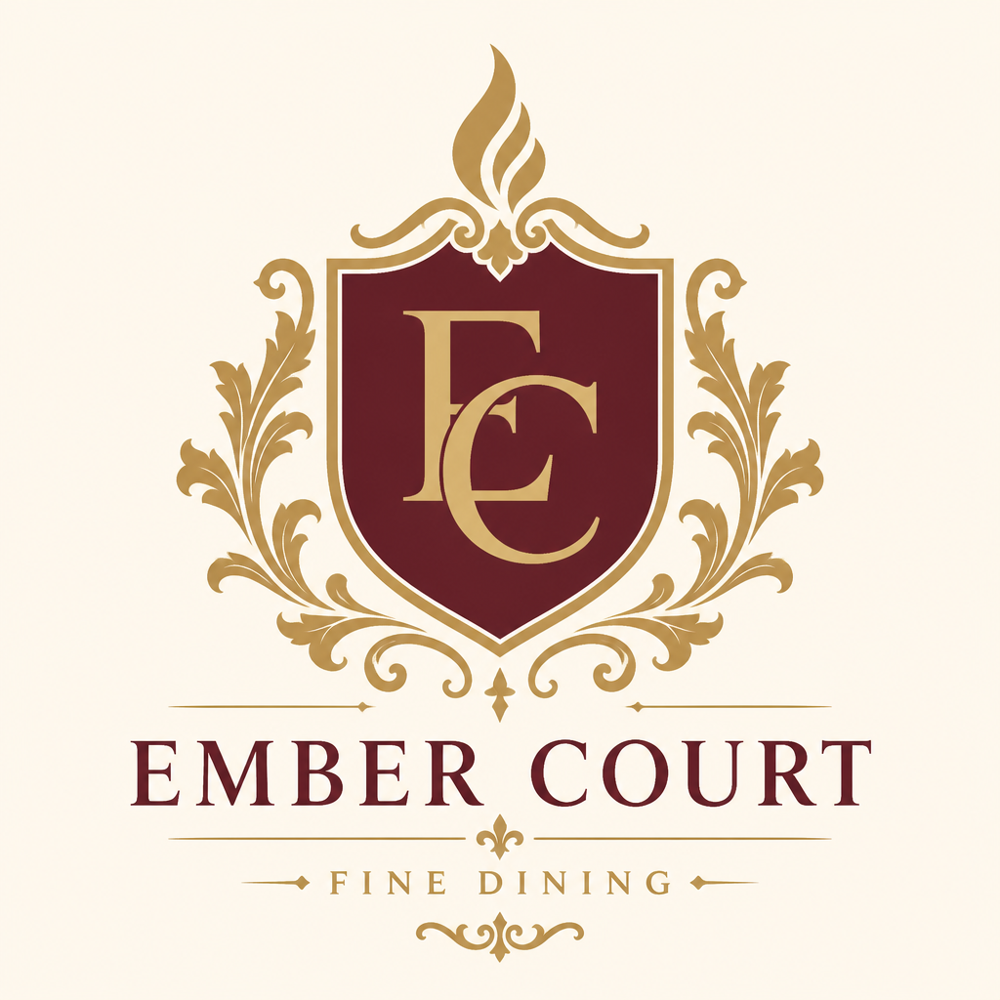
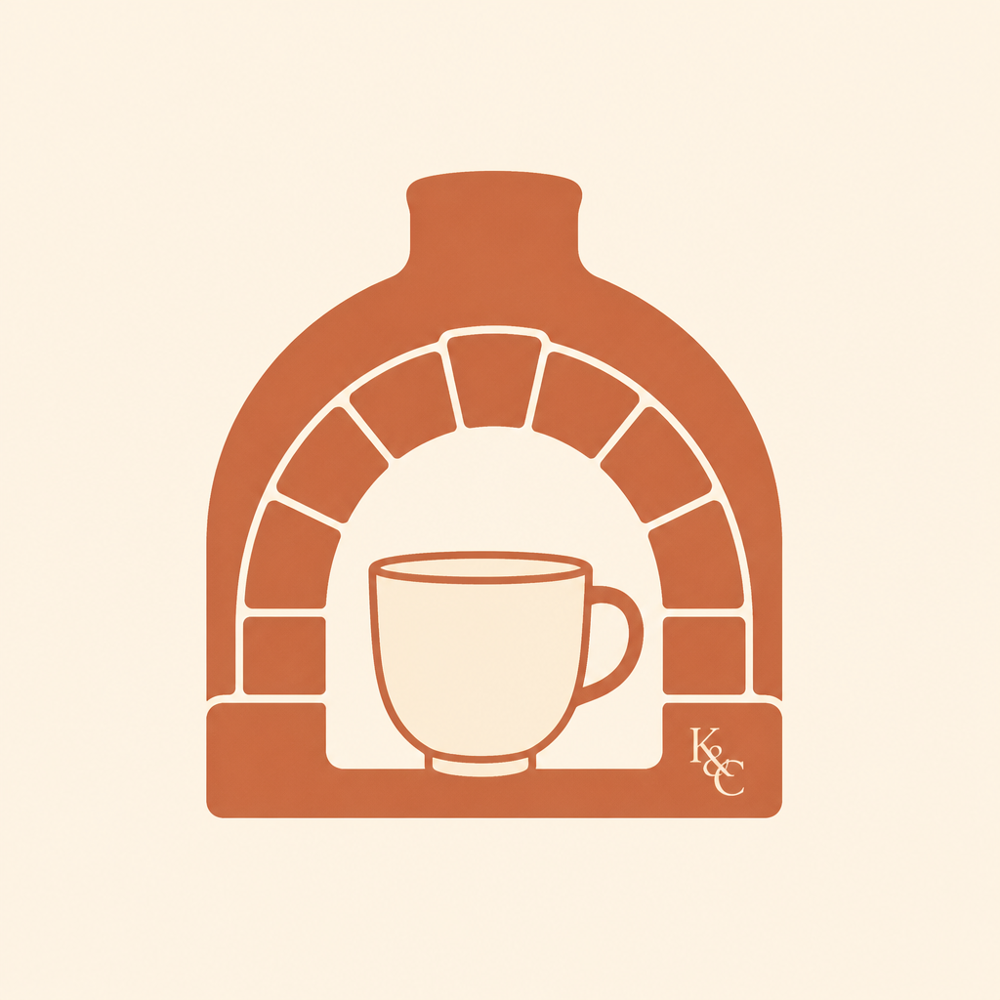
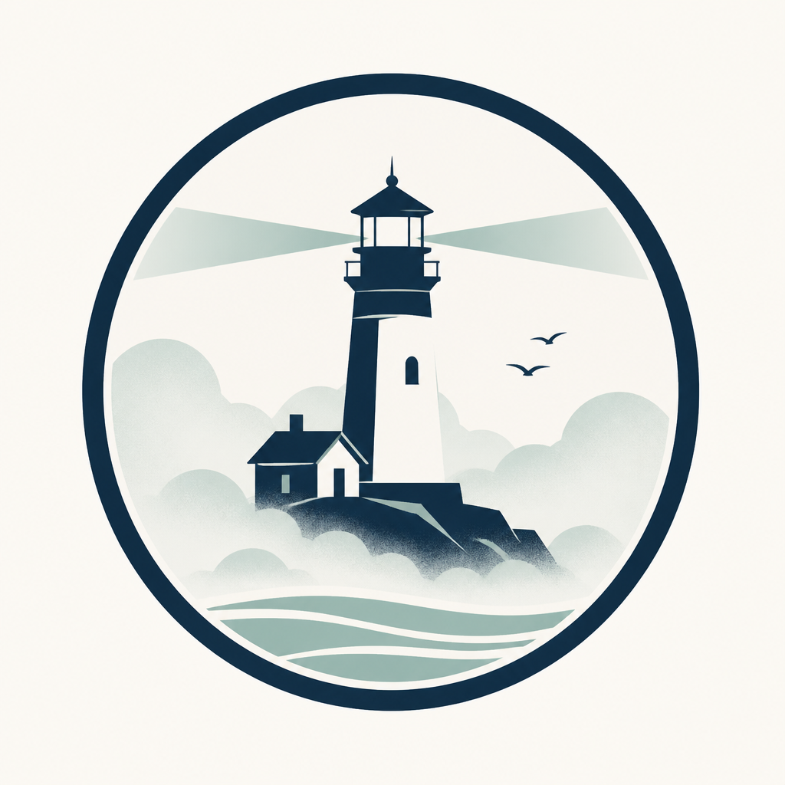
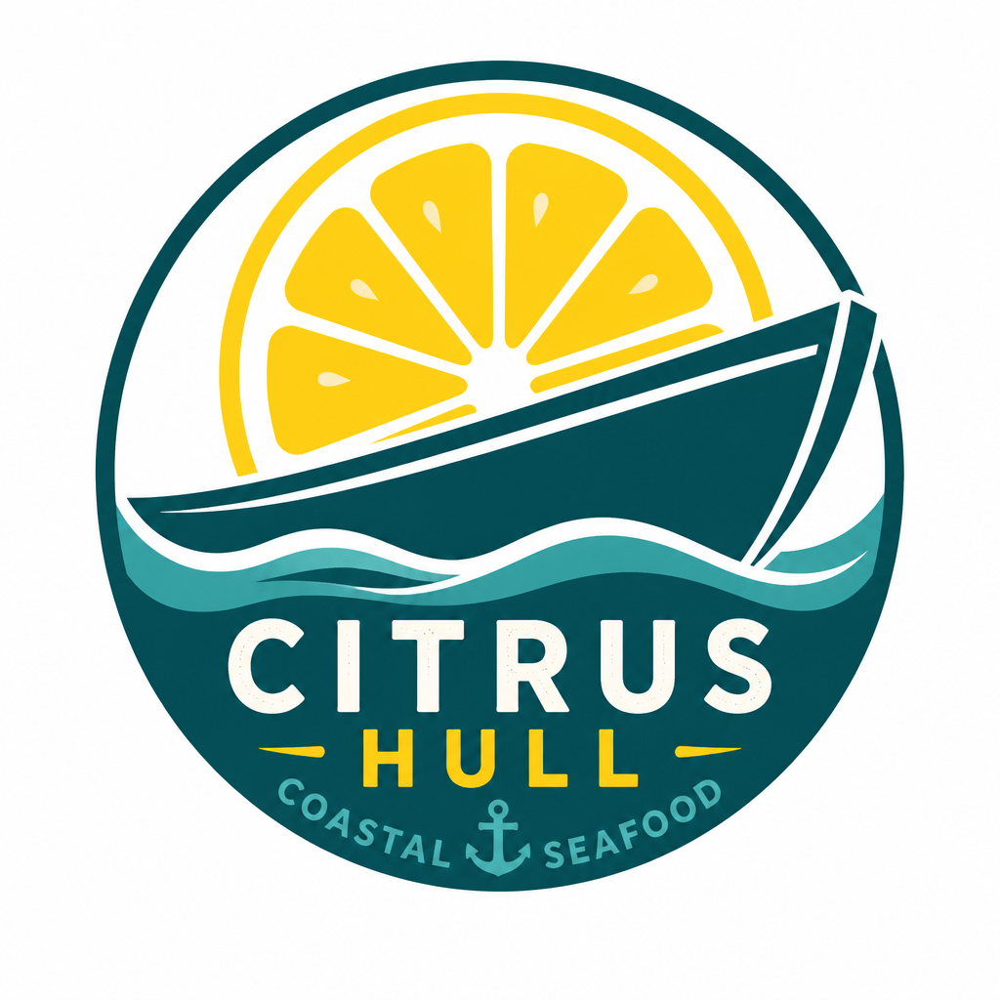
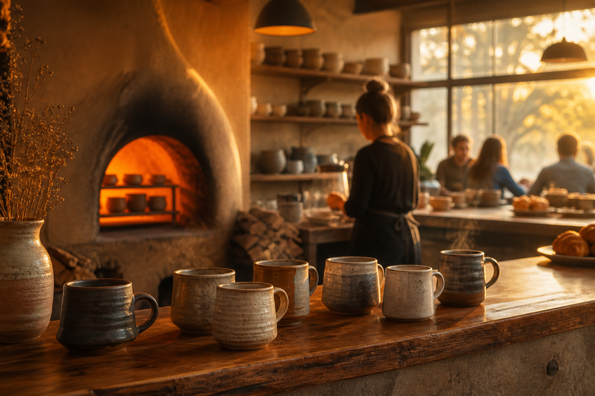
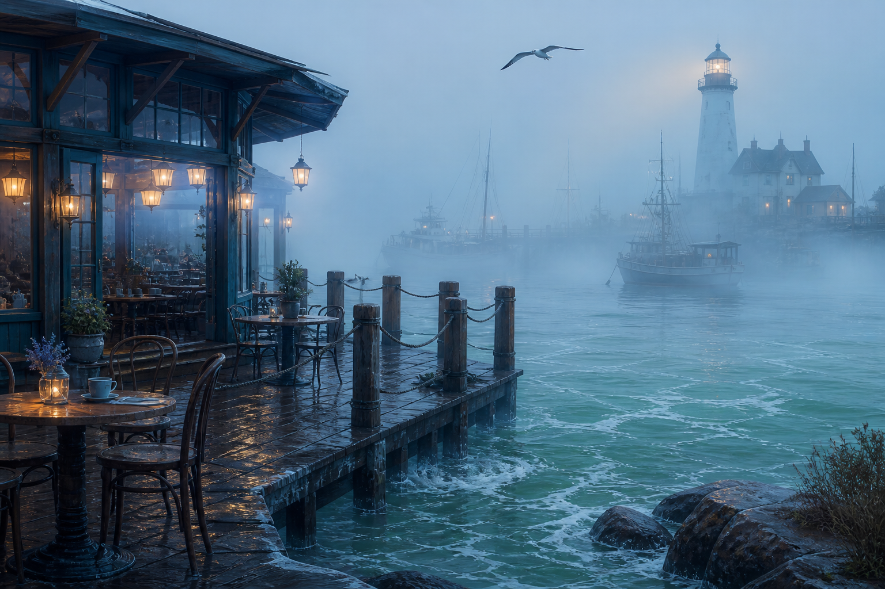
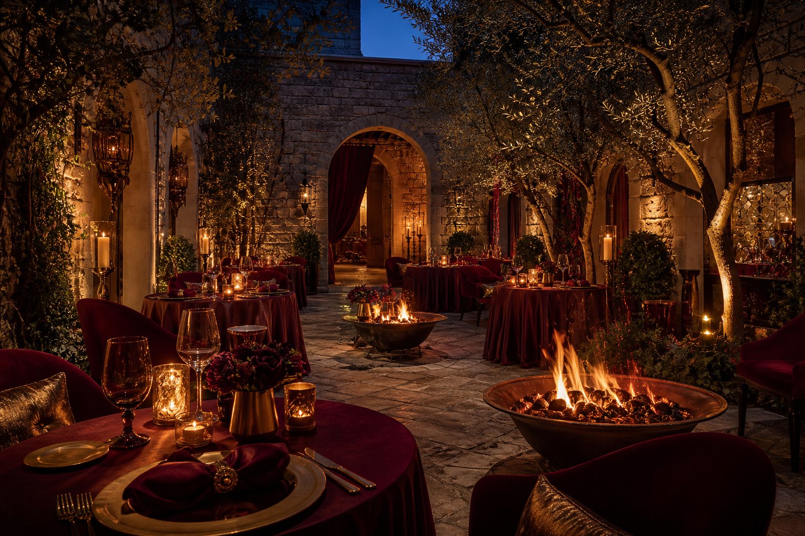
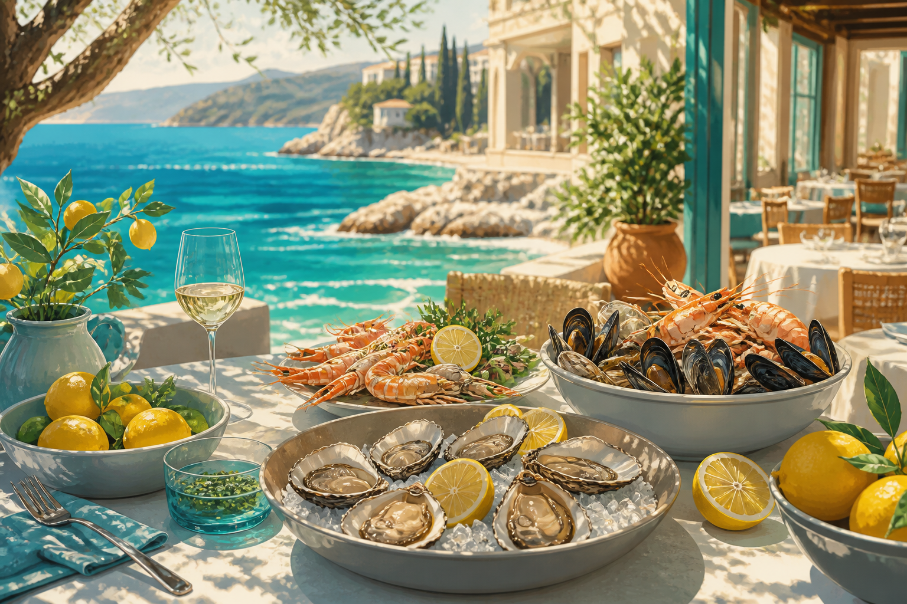
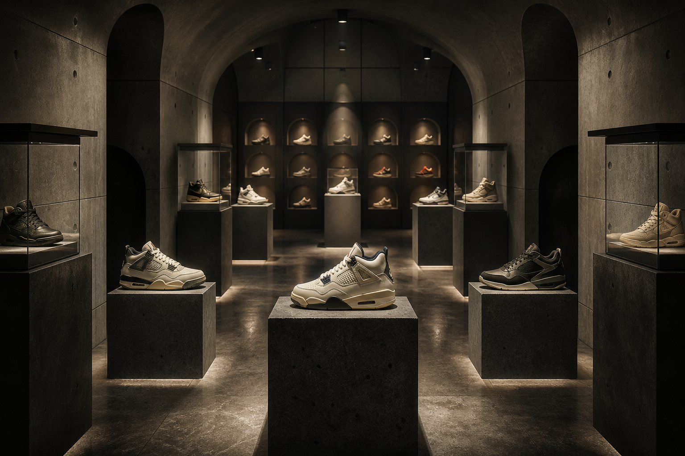

Websites

Logos



Illustrations





Pass HA · Crosslink — five logos, five illustrations, five websites (2 cafes, 2 restaurants, 1 sneaker vault) sharing one pattern language: croze ↔ catalog schema ↔ Two Ways mercy.








